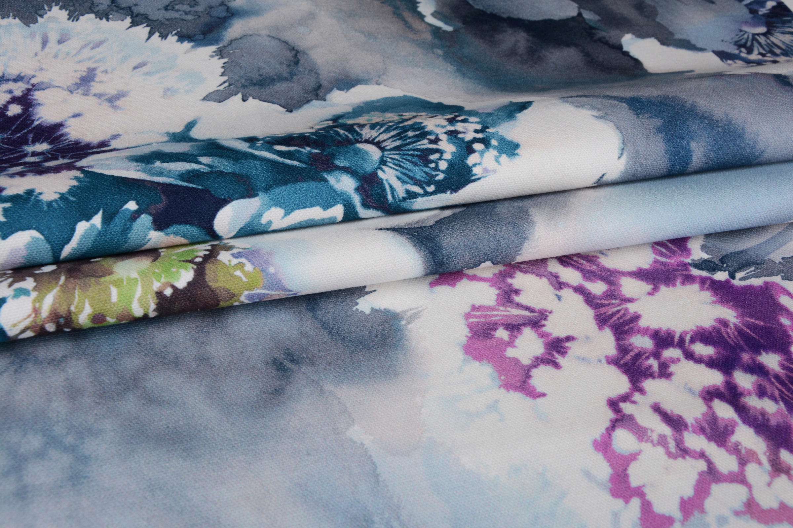
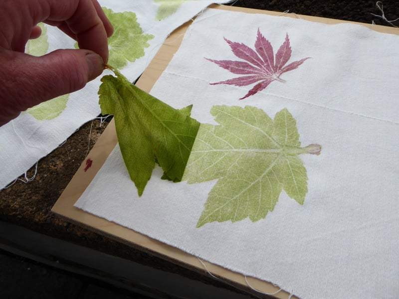

Pomelo (Yangon)
Focus: Women’s clothing made from natural fabrics (cotton, linen).
Ethics: Works with local tailors, avoids fast fashion practices.
Website: Facebook Page
- Junction Square, Yangon
- Myanmar Plaza, Yangon

Hla Day (Yangon & Online)
Focus: Fair-trade handicrafts, bags, and accessories by local artisans.
Ethics: Supports marginalized communities, eco-friendly materials.
Website: hladay.com
- No. 55, 1st Floor, Thiri Mingalar Lane, Yangon
- Also available at pop-up markets

Htaike Htaike (Yangon & Mandalay)
Focus: Handwoven Burmese cotton & silk clothing.
Ethics: Preserves traditional weaving, fair wages for weavers.
Website: htaikehtaike.com
- No. 73, Bogalay Zay Street, Yangon

Lotus & Weaves (Online & Pop-Ups)
Focus: Organic cotton & lotus fiber scarves, shawls.
Ethics: Chemical-free dyes, supports rural weavers.
Website: Facebook Page
- Mostly online (ships within Myanmar)